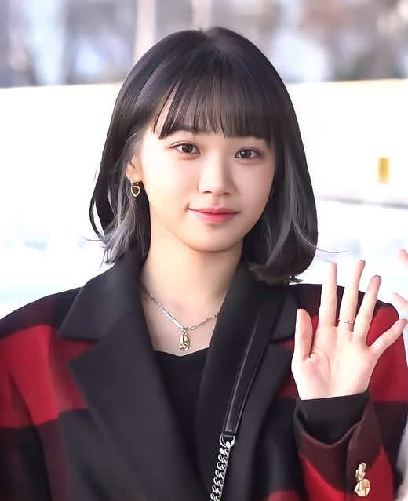
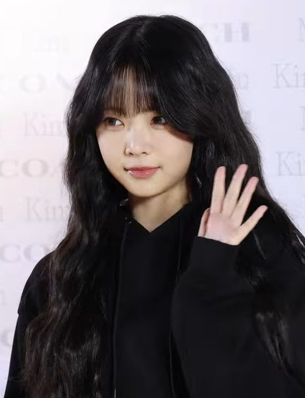

르세라핌 · 入門指南
LE SSERAFIM
五人女團，2022 年 5 月 2 日出道。團名是英文 “IM FEARLESS” 重組字母而成 —— 這句話就是他們全部作品的主題，也是五個人真實履歷的總結。

團名的意思
LE SSERAFIM 是英文 “IM FEARLESS”（我無所畏懼）重組字母而成的。 這不是後來才附會的解釋，而是命名時就定好的 —— 這句話基本上就是他們全部作品的主題。
知道這件事，後面所有東西都會變得好懂：為什麼主打歌叫 FEARLESS、ANTIFRAGILE、UNFORGIVEN， 為什麼歌詞老是在講「你想讓我倒下，我反而更強」。
五位成員的背景
這個團最有意思的地方在這裡：五個人來自五個完全不相干的世界，沒有一個是同一條路上來的。


宮脇咲良 Sakura
1998/03/19 · 28 歲 · 日本鹿兒島 · 最年長、門面、副唱
她的資歷長到有點誇張。
- 13 歲加入 HKT48 第一期研究生
- 升上 Team H，後轉 Team KIV 並當上共同隊長
- 兼任 AKB48 Team A —— 同時待在兩個日本國民級團體
- 參加《Produce 48》拿下第 2 名，成立 IZ*ONE（同年 10 月出道）
- IZ*ONE 解散，幾個月後正式退出 HKT48
- 以 LE SSERAFIM 在韓國重新出道
重點在最後那一步。她在日本已經是功成名就的頂級偶像，卻在 25 歲那年主動放棄日本的一切， 從零開始在韓國當新人。這在偶像產業裡是非常罕見的選擇。
為什麼粉絲特別看重她：她是「已經到頂了還願意重新爬」的那種案例。 對整個團的「無所畏懼」命題來說，她本人就是最強的證據。
金采源 Chaewon
2000/08/01 · 26 歲 · 韓國 · 隊長、主唱
原本是 Woollim 娛樂的練習生。2018 年代表公司參加《Produce 48》， 以 2,238,192 票、第 10 名擠進 IZ*ONE —— 名次就在安全線邊緣，是一路苦戰上來的。
IZ*ONE 結束後，她和 Sakura 在 2022 年 3 月 14 日同時簽進 Source Music。 兩個前隊友一起重新出發，當時在韓國引起很大討論。她自己受訪時談過，換東家「並不容易」。
她的課題：從 IZ*ONE 裡的一員，變成新團要帶頭的隊長。 這個角色轉換是她這幾年最主要的成長線。
許允真 Huh Yunjin
2001/10/08 · 24 歲 · 首爾出生、美國長大 · 主唱、詞曲創作
唯一在美國長大的成員。出生於首爾，8 個月大就隨父母移民美國， 童年住過紐約州 Niskayuna、加州、芝加哥。英文是母語級，也是團裡負責海外訪問溝通的人。
她的故事是「失敗過」：
2018 年她回韓國成為 Pledis 娛樂（SEVENTEEN 的公司）練習生，同年參加《Produce 48》—— 第 11 集就被淘汰，最終排名第 26 名。整個節目裡她是被看好但沒能出線的那一類。 四年後她才以 LE SSERAFIM 出道，並在 NME 專訪裡把這個團形容成她的 “blessing in disguise”（塞翁失馬）。
她也是團裡唯一持續發表個人創作的成員：
| 個人單曲 | 時間 |
|---|---|
| Raise y_our glass | 2022 / 08 |
| I ≠ DOLL | 2023 / 01 |
| Jellyfish | 2025 / 01 |
I ≠ DOLL（我不等於玩偶）這首從歌名就看得出她想講什麼 —— 偶像的自我與被物化之間的矛盾。 她也參與團體歌曲的作詞作曲，是這個團「有話要說」這件事的主要來源。
如果你喜歡看歌詞：重點在她。她是團裡把想法寫進歌裡的那個人。
Kazuha 中村一葉
2003/08/09 · 23 歲 · 日本關西 · 主舞、副唱、Rap
她原本的人生規劃裡完全沒有偶像這件事。
3 歲開始學芭蕾，一路走的是純正古典菁英路線：
- 日本 橋本祥代芭蕾學校
- 莫斯科 波修瓦芭蕾學院（Bolshoi Ballet Academy）
- 英國 皇家芭蕾學校（The Royal Ballet School）
- 2020–2021 荷蘭國家芭蕾學院（Dutch National Ballet Academy）
比賽成績：
| 賽事 | 成績 |
|---|---|
| 2016 日本 MIE 芭蕾大賽 | 冠軍 |
| 2017 World Dream Ballet High School | 冠軍 |
| 2018 亞洲大獎賽 少年組 | 銀牌 |
| 2019 神戶 Victoire 芭蕾大賽 | 冠軍 |
然後是最戲劇性的一段：她在荷蘭唸書時被發掘， HYBE 創辦人房時爀本人親自飛到荷蘭見她，把她挖進 K-pop。
如果是被舞蹈圈粉的：主因是她。 她的身體線條、延展與重心控制是十幾年古典訓練出來的， 跟一般偶像編舞的質地有明顯落差 —— 這也是整團舞蹈辨識度高的主因。
洪恩彩 Hong Eunchae
2006/11/10 · 19 歲 · 韓國 · 忙內、副唱、副舞
五個人裡唯一沒有任何「前作」的。
- 在 Def Dance School 練了兩年舞
- 成為 Source Music 練習生 不到一年就出道
- 出道時才 15 歲
其他四個人都是身經百戰 —— 兩個前 IZ*ONE、一個選秀落選再爬起來、一個國際芭蕾比賽冠軍 —— 她是唯一從零開始、直接被放到舞台上的。
2023 年 2 月，她成為 KBS《Music Bank》的主持人（2 月 10 日首次主持），當時 16 歲。 主持這個位置在韓國通常給人氣與口條都過關的偶像，對一個出道不滿一年的新人是相當快的升級。
她代表的處境：沒有背景、沒有緩衝期，直接上場。 在五個人裡，她是最沒有退路的一個。
一個你可能會查到的歷史
出道時這個團是 6 人。第六位成員在 2022 年 7 月因爭議離團，之後就固定以 5 人活動。 如果在網路上看到「原本有六個人」，指的就是這件事 —— 那是出道兩個月內發生的， 現在的所有作品都是 5 人陣容。
代表歌曲
必聽的四首核心曲
| 歌 | 時間 | 為什麼重要 |
|---|---|---|
| FEARLESS | 2022 / 05 | 出道曲，慵懶帶刺的態度奠定人設 |
| ANTIFRAGILE | 2022 / 10 | 真正爆紅的一首。拉丁 reggaeton 節奏，「你想讓我倒下，我反而更強」 |
| UNFORGIVEN | 2023 / 05 | 首張正規專輯，找來 disco 傳奇 Nile Rodgers 合作 |
| Perfect Night | 2023 / 10 | 與《鬥陣特攻 2》聯名，全球串流大爆發，最好入門的一首 |
完整發行時間軸
| 日期 | 作品 | 主打／說明 |
|---|---|---|
| 2022 / 05 / 02 | 《FEARLESS》第一張迷你專輯 | FEARLESS（出道） |
| 2022 / 10 / 17 | 《ANTIFRAGILE》第二張迷你專輯 | ANTIFRAGILE |
| 2023 / 05 / 01 | 《UNFORGIVEN》第一張正規專輯 | UNFORGIVEN (feat. Nile Rodgers) |
| 2023 / 10 | 數位單曲 | Perfect Night（《鬥陣特攻 2》聯名） |
| 2024 / 02 | 《EASY》第三張迷你專輯 | EASY — 轉向都會感、輕盈的編曲 |
| 2024 / 08 | 《CRAZY》第四張迷你專輯 | CRAZY — 迪斯可 house，氣勢最強的一首 |
| 2025 / 03 / 14 | 《HOT》第五張迷你專輯 | HOT |
| 2025 / 10 / 24 | 單曲 | SPAGHETTI (feat. j-hope of BTS) — 跨團合作，話題度極高 |
| 2026 / 04 / 24 | 先行單曲 | CELEBRATION |
| 2026 / 05 / 22 | 《PUREFLOW Pt. 1》第二張正規專輯 | BOOMPALA |
| 2026 / 09 / 11 | 《Made My Night》第二張單曲專輯 | Made My Night — 最新 |
官方 MV
為什麼吸引人
1. 主題是「韌性」，不是「可愛」
ANTIFRAGILE（反脆弱）這個詞出自經濟學家 Nassim Taleb 的同名著作， 指的不是「抗壓」，而是「受到打擊後會變得更強」。
這是整個團的核心命題：不假裝完美、承認自己有慾望、被質疑就拿出成績。 對正在建立自我認同的青少年來說，這比甜美路線有力得多。
2. 他們的「不完美」是公開的，而且被轉化成敘事
2024 年 Coachella 演出後，他們的現場唱功被大量批評，一度是韓國網路的熱門攻擊對象。 他們沒有迴避，後續作品明顯針對這點進步。這個「被打 → 長大」的真實過程剛好對上團名， 也是粉絲凝聚力最強的來源。
3. 舞蹈的辨識度特別高
Kazuha 的芭蕾底子讓整團的編舞線條、延展感和一般韓團不太一樣， 動作乾淨、有古典的拉伸感。
4. 音樂好入門
他們的曲風偏輕盈 —— 拉丁節奏、house、afrobeat —— 旋律不重、節奏明確， 對不熟韓流的人來說門檻比很多團低很多。
把五個人放在一起看
會發現一件事：沒有一個人是「順順利利被選上」的。
| 成員 | 他的「不順」 |
|---|---|
| Sakura | 放棄日本頂級地位，重新當新人 |
| Chaewon | 選秀第 10 名勉強擠進，再換公司重新出道 |
| Yunjin | 選秀第 26 名被淘汰，四年後才出道 |
| Kazuha | 放棄十幾年的芭蕾職涯，轉換完全不同的跑道 |
| Eunchae | 零經驗，15 歲直接上場 |
所以團名叫「IM FEARLESS」、主打歌叫「ANTIFRAGILE」，不是隨便取的包裝 —— 那是這五個人真實履歷的總結。這也是為什麼他們後來被質疑唱功時，粉絲的凝聚力反而更強： 那個敘事本來就是「我們都是爬起來的」。
熱門金曲
| 順序 | 歌 | 目的 |
|---|---|---|
| 1 | Perfect Night | 最順耳，先建立好感 |
| 2 | ANTIFRAGILE | 代表作，懂了這首就懂這個團 |
| 3 | CRAZY | 氣勢的天花板 |
| 4 | Made My Night | 最新單曲，聽了就跟得上進度 |
會遇到的用語
看 K-pop 相關的討論或報導時，這幾個詞出現頻率很高。 知道意思之後，上面的內容和網路上的討論都會好讀很多。
| 用語 | 意思 |
|---|---|
| bias | 一個團裡最喜歡的成員。中文圈有時直接說「本命」。 |
| FEARNOT 피어나 |
LE SSERAFIM 的官方粉絲名。韓文同時有「綻放」的意思。 |
| 忙內 maknae · 막내 |
團裡年紀最小的成員。這個團是洪恩彩。 |
| 主打歌 title track |
一張專輯選來重點宣傳、拍 MV、上打歌節目的那首。上面時間軸列的就是各張的主打歌。 |
| 迷你專輯 mini album · EP |
約 5–6 首的短專輯，K-pop 最常見的發行形式。相對的「正規專輯」曲目較完整。 |
| 回歸 comeback |
發新作品、重新開始活動。不是「復出」的意思 —— 每次出新歌都叫回歸。 |
| 打歌節目 music show |
韓國電視台的每週音樂節目，例如 KBS《Music Bank》。新歌宣傳期會連續上好幾檔。 |
| Weverse | HYBE 旗下的官方粉絲平台，公告、會員內容與周邊都在上面。 |
你覺得：
- 你最喜歡哪個成員？
- ANTIFRAGILE 那句歌詞你怎麼想？
- 五個人裡誰的故事最讓你有感覺？
圖片出處
站上所有照片都取自 Wikimedia Commons 的自由授權檔案，並依授權條款標示作者。 團體標誌為公有領域（純文字標誌不受著作權保護）。
- 封面（2026 金唱片大獎）— 攝影 _TV10 · CC BY 4.0 · 原始檔案 （已縮小尺寸並轉為 JPEG）
- 宮脇咲良、許允真、金采源、Kazuha 個人照 — 攝影 K-POPIT 케이팝잇 · CC BY 3.0 · 原始檔案 （已縮小尺寸並裁切）
- 洪恩彩個人照 — 攝影 티비텐 · CC BY 3.0 · 原始檔案 （已縮小尺寸並轉為 JPEG）
- 團體標誌 — Source Music · 公有領域 · 原始檔案
- 影片為官方 YouTube 頻道的嵌入播放器，本站未另存任何影音檔案。
{kind=link}
{kind=link}
{kind=link}
資料來源
- Le Sserafim — Wikipedia
- Le Sserafim discography — Wikipedia
- Sakura Miyawaki — Wikipedia
- Kim Chaewon — Wikipedia
- Kazuha (singer) — Wikipedia
- Antifragile (EP) — Wikipedia
- Pureflow Pt. 1 — Wikipedia
- Celebration — Wikipedia
- Spaghetti — Wikipedia
- Hot (EP) — Wikipedia
- Huh Yunjin on how LE SSERAFIM are her “blessing in disguise” — NME
- Huh Yunjin — Kpop Wiki
- Hong Eunchae — LE SSERAFIM Wiki
- Hong Eunchae 的 Music Bank 主持首秀 — KbizOom
- 7 Things to Know About LE SSERAFIM’s Kazuha — EnVi Media
- Chaewon — IZ*ONE Wiki
- LE SSERAFIM Announces Comeback with 2nd Single “Made My Night” — Kfriday
- LE SSERAFIM’s New Album ‘PUREFLOW’ Pt. 1 Release Date Revealed — Billboard
- LE SSERAFIM Members Profile — Kprofiles